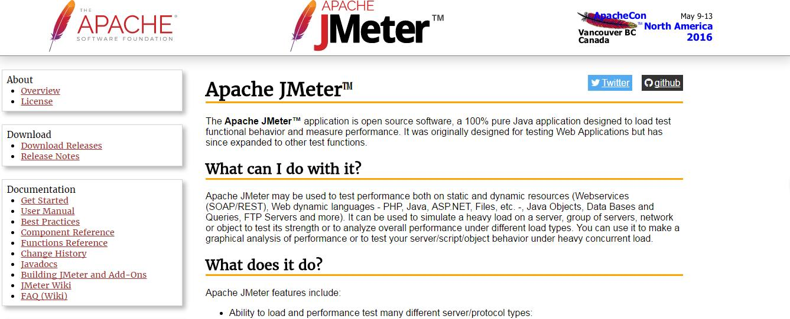

##1. 安装
- 安装Java运行环境
下载Apache JMeter安装包 http://jmeter.apache.org/download_jmeter.cgi
下载apache-jmeter-2.12.zip md5 pgp解压至任意文件夹，运行bin里面的jmeter,出现图形界面
Apache JMeter 教程： http://www.ltesting.net/ceshi/open/kyxncsgj/jmeter/
##2.JMeter 录制操作脚本
###2.1 使用badboy http://www.badboy.com.au/
- file->new 开始录制
- file->Export to JMeter 导出脚本
- 使用Jmeter file->open 打开脚本，添加Listener后开始测试
###2.2 使用自带的代理服务器录制脚本 - 右击Test Plan Add->Threads(users)->Threads Group
- 右击Threads Group Add->Logic Controller->Recording Controller
- 右击WorkBench Add->Non-test Elements->HTTP(S) Test Script Recorder
- 在Target Controller选择Test Plan->Thread Group->Recording Controller
- 在Grouping选择Put each group in a new transaction controller
- 单击底部的Start开启代理服务器
- IE配置：
Internet Options->Connections->LAN Settings
在Proxy server下面的方框打钩，Adress: localhost Port:8080 单击OK
在浏览器输入录制的网址，就可以开始录制了。录制完成后，停止代理服务器，取消IE的代理设置即可。 - 要访问HTTPS的网站，需要将证书加入到浏览器中，
证书位置：JMeter->bin目录中的ApacheJMeterTemporaryRootCA.crt
FireFox加入办法：Options->Advanced->Certificates->View Certificates->Import - 数字证书安装参考：http://jmeter.apache.org/usermanual/component_reference.html#HTTP%28S%29_Test_Script_Recorder
在根证书里面加上bin里面自动生成的证书。
##3. 查看并分析测试结果
通过上一步得到测试脚本后，下一步就是Add->Listener->Aggregate Report,Add->Listener->View Result in Table等查看测试结果了。
###3.1 Aggregate Report
- Label element(例如HTTP Request) 的名称
- Samples 发出的请求的数量
- Average 平均的响应时间
- Median 所有响应时间的中位数
- 90%Line 90%用户的响应时间
- Min 最小的响应时间
- Max 最大的响应时间
- Error% 出现错误的请求的数量 / 请求的总数
- Throughput 每秒完成的请求数量（Request Per Sencond）
- KB/sec 每秒从服务器接收到的数据量
###3.2 View Result in Table - Sample 请求的序号
- StartTime 请求开始的时间
- ThreadName 本次请求的线程的名称
- Sample Time 请求花费的时间
- Status 请求是否成功
- Bytes 请求返回的数据量
##3. New Relic（在线监测平台）
###3.1 配置
- 注册账户 http://newrelic.com/
- 选择最上面的APM，然后选择PHP，安装PHP Agent https://docs.newrelic.com/docs/agents/php-agent/installation/php-agent-installation-redhat-centos
- 安装完成之后重启服务器，出现PHP Application，单击进入有监控界面
PHPAplication_NewRelic.png
参考网站：http://code.tutsplus.com/tutorials/new-relic-jmeter-perfect-performance-testing--net-34978
###3.2 监测结果分析
参考网址：https://cnodejs.org/topic/53fde58d7c1e2284785cd39e
####3.2.1 Overview
后台统计总图，分为5个部分
- Web transactions response time 网站平均响应时间
- Apdex score 应用性能指数：蓝色表示优异，绿色表示好，黄色表示一般
- Throughput 每分钟请求数 （request per minute）
- Transaction 接口的响应时间
- Error rate 引起错误的请求 / 总请求数量
图：image->New Relic入门->Overview_NewRelic.png
####3.2.2 Map
系统用到的各个应用之间的关系 和 每个应用的平均响应时间
图：image->New Relic入门->Map_NewRelic.png
####3.2.3 Transactions
应用请求的每个URL地址的响应时间。在这里可以看到每个接口的响应时间。
单击某个能看到详细的信息。
图：image->New Relic入门->Transactions_NewRelic.png
####3.2.4 Database
数据库的各种操作的平均响应时长browser
参考网站：http://code.tutsplus.com/tutorials/front-end-monitoring-with-new-relic-browser--cms-22424
在每一个展示给用户的页面加载完成的时候，Browser都会捕捉一下信息： - 页面加载完毕花费的时间
- 代码和动作（包括JS，Ajax, 用户与浏览器交互的时间）执行的时间
- 在网络上和服务器上花费的时间
- 浏览器信息，操作系统信息
Overview:概要视图
browser -> Session traces: 跟踪一个真正的用户从开始到结束的经历。监控的信息包括，用户交互，资源加载，iframes,等待Ajax调用的时间，出现的错误和其他相关信息。
在这里，你能看到一个错误发生之前和之后用户做了什么。
Session traces help you understand:
How users experience your page load, including time to DOM load, time waiting for Ajax requests to complete, and the user’s
interactions with the page
How the New Relic metrics reflect your end users’ experiences
The sequence of JavaScript and browser events, which take longer than others, and when each event occurs
Where bottlenecks occur, and what may be causing them
Why one page load may be slower than others, by providing the context for individual events during a session
browser -> Page Views:
提供被频繁访问的页面的详细信息
broeser -> Browsers:
查看你的网站在不同浏览器下的表现。
Synthetics
为你的网站设置定期的测试，当问题出现后立刻通知你。
Server
监控服务器 硬盘 内存 网络 CPU使用情况。
Server -> Processes:
显示每个进程的CPU和内存使用情况